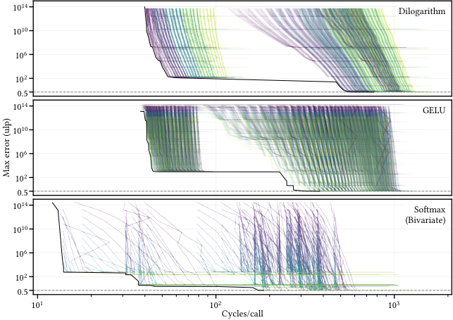

Ziv's type soundness and compiler correctness results are formalized in Lean 4, with the formalization provided as supplementary material.
Abstract
Developing performant, correctly rounded math libraries is challenging. Such implementations often rely on extended-precision arithmetic for correct rounding and precomputed constants for performance. Existing implementation languages, however, provide limited support for (i) high-level abstractions for such arithmetic and (ii) staged computation to combine precomputation and runtime computation in one program. As a result, existing implementations often miss abstraction opportunities and hard-code constants precomputed using separate programs. These practices make it difficult to write, understand, and modify these libraries. We present Ziv, a programming system for developing correctly rounded math libraries. It consists of a small language, a rich standard library, and a provably sound compiler targeting C. Ziv supports (i) high-level numerical abstractions via types and operations for extended-precision numbers, and (ii) staged computation via compile-time evaluation of expressions known to be input-independent. These features enable high-level code that unifies precomputation and runtime computation. We embed Ziv in Julia and evaluate it by reimplementing 19 functions from two state-of-the-art libraries targeting correct rounding; we achieve competitive performance with 2.63$\times$ reductions in lines of code. We also implement three new functions and automatically explore 824,256 variants, achieving 96.5$\times$ average speedup over an arbitrary-precision library.
Problem
Correctly rounded math libraries need extended-precision arithmetic and precomputed constants. Existing implementation languages give little support for high-level abstractions or for staged computation that mixes precomputation with runtime code. The resulting libraries are large and hard to write, understand, and modify.
Approach
Ziv is a small language embedded in Julia, with a standard library of extended-precision types (Dyadic, MultiWord, Table) and a compiler targeting C. Information-flow-style labels identify input-independent expressions, which are evaluated at compile time. The type system's soundness and the compiler's correctness are proved, and all results are formalized in Lean 4. Codex helped construct parts of the Lean artifact, with every proof checked by the Lean kernel.
Results
Ziv reimplementations of 19 CORE-MATH and LLVM-libc functions have competitive performance and use 2.63x fewer lines of code. Automatic exploration of 824,256 variants of three new functions gives a 96.5x average speedup over MPFR.

Figure 10. Maximum observed ulp errors versus cycles per call for implementation variants generated by Ziv . Each colored curve varies polynomial degree while keeping all other parameters constant; curves are colored sequentially to indicate table size from small to large . Black curves represent Pareto frontiers.
Function
CORE-MATH Orig
CORE-MATH Ziv
LLVM-libc Orig
LLVM-libc Ziv
exp
210
136
466
123
log
1,051
155
941
125
sin
140
12
112
69
tan
195
109
138
87
Lines of code, original vs. Ziv (selected functions)